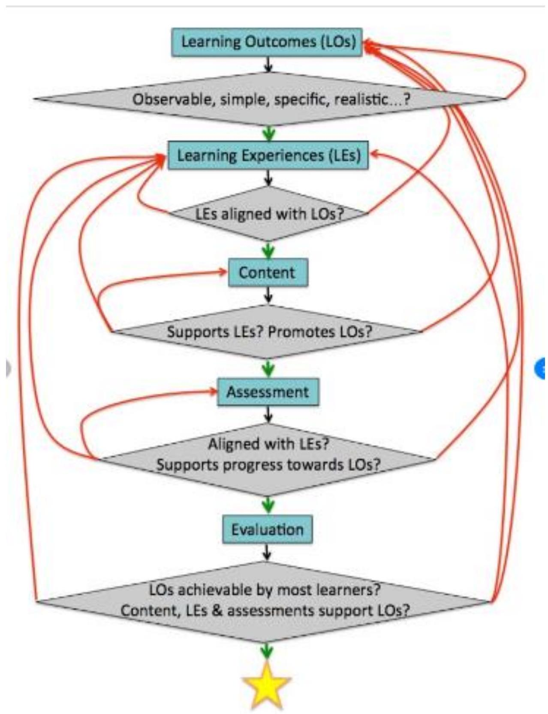

Curriculum Design
9.4 TEACHER EDUCATION CURRICULUM FRAMEWORK.
Learning Outcomes
- Analyse the teacher education curriculum framework in Kenya
- Apply the teacher Education Curriculum Framework to the learning process in Kenya
- Appreciate the need for teacher education curriculum framework to the current curriculum
Acronyms & Abbreviations
| AU | African Union |
| BECF | Basic Education Curriculum Framework |
| CBC | Competency Based Curriculum |
| CSL | Community Service Learning |
| CTS | Career and Technology Studies |
| ECDE | Early Childhood Development and Education |
| ESD | Education for Sustainable Development |
| ET | Engineering Technology |
| GCED | Global Citizenship Education |
| ICT | Information and Communication Technology |
| IEP | Individualized Educational Plan |
| KIE | Kenya Institute of Education |
| KICD | Kenya Institute of Curriculum Development |
| KNEC | Kenya National Examinations Council |
| KCBC | Kenya Competence Based Curriculum |
| LSE | Life Skills Education |
| LSV | Life Skills and Values |
| PCI | Pertinent and Contemporary Issues |
| SNE | Special Needs Education |
| SS | Senior School |
| STEM | Science, Technology, Engineering and Mathematics |
| TSC | Teachers' Service Commission |
| VTC | Vocational Training Centres |
9.6 TOPIC 14; CURRICULUM DESIGN
Learning Outcomes
- Discuss the attributes of curriculum design in curriculum development
- Apply the principles of curriculum design in curriculum development
- Discuss the components of curriculum design in Kenya
- Examine curriculum design from other countries
- Develop scope and sequence chart in curriculum design
- Discuss on importance of curriculum design.
Curriculum design
Is a term used to describe the purposeful, deliberate, and systematic organization of curriculum (instructional blocks) within a class or course. It is a way for teachers to plan instruction. When teachers design curriculum, they identify what will be done, who will do it, and what schedule to follow.
N/B Curriculum design is not a one-step process; continuous improvement is a necessity..
Curriculum design then includes an arrangement of objectives, subject matter chosen, specific action plans for teaching, all forms-of instructional materials to he used, time schedules, activity descriptions and so forth. If one goes further and includes what pupils learn as part of curriculum, then components of evaluation also have to he added.
IMPORTANCE OF CURRICULUM DESIGN
- It both creates and reflects culture and identity.
Curriculum reflects the national culture in which a school operates - different countries have different expectations of their students, even if teaching practices are similar. But it can also reflect and define the culture at the school level as well, from the specific needs of the neighbourhoods they serve to the topics where you want to differentiate yourself. - It keeps up with a changing world.
A good curriculum is never a one-and-done initiative. Revisiting it regularly allows you to not only review how things are going, but also make room for new topics that are relevant today. In fact, the World Economic Forum touts curriculum as a key player in helping educators keep up with the speed of changing trends, technology and skills students will need in the future. - It makes learning (and teaching) consistent.
Internal consistency happens when students inside your school can expect to walk away with the same set of skills, whether their teacher is a veteran in the profession or learning the ropes. Consistency should also stretch across a district, state or province, or country as well - a student in fifth grade should expect to graduate with the same foundational knowledge and skills, no matter where they learn. - It opens the doors for collaboration.
Having regular discussions about curriculum creates opportunities to get all stakeholders involved: teachers, administration, parents and communities. Getting input from everyone will help identify where you're strong and what gaps you need to address. - It saves schools money.
Textbooks aren't cheap, but they're common place because they're convenient - they provide a pre-built progression of knowledge that's hard to ignore for busy teachers. With a strong curriculum in place, schools can break away from an over-reliance on textbooks and take a more active and dynamic role in choosing better (and cheaper) texts. - It helps teachers align.
A good curriculum also connects teachers from across grade levels and subject areas to look at the big picture of student learning. Teachers can work together to plan a progression of topics that build off of ones that came before and connect across disciplines. The result? You reinforce knowledge over time and make sure that students are prepared for what's coming next. - It provides measurable targets.
Data matters. That's why a good curriculum sets measurable outcomes and tracks progress throughout the year. Teachers get a better view of what's happening in the classrooms, students know where they stand and parents
TYPES OF CURRICULUM DESIGN
There are three basic types of curriculum design:
- Subject-centered design
- Learner-centered design
- Problem-centered design
Subject-Centered Curriculum Design
Subject-centered curriculum design revolves around a particular subject matter or discipline. For example, a subjectcentered curriculum may focus on math or biology. This type of curriculum design tends to focus on the subject rather than the individual. Subject-centered curriculum design describes what needs to be studied and how it should be studied.
Learner-Centered Curriculum Design
In contrast, learner-centered curriculum design takes each individual's needs, interests, and goals into consideration. In other words, it acknowledges that students are not uniform and adjust to those student needs. Learner-centered curriculum design is meant to empower learners and allow them to shape their education through choices. Instructional plans in a learner-centered curriculum are differentiated, giving students the opportunity to choose assignments, learning experiences or activities. This can motivate students and help them stay engaged in the material that they are learning.
Problem-Centered Curriculum Design
Like learner-centered curriculum design, problem-centered curriculum design is also a form of student-centered design. Problem-centered curricula focus on teaching students how to look at a problem and come up with a solution to the problem. Students are thus exposed to real-life issues, which helps them develop skills that are transferable to the real world. Problem-centered curriculum design increases the relevance of the curriculum and allows students to be creative and innovate as they are learning. The drawback to this form of curriculum design is that it does not always take learning styles into consideration.
Curriculum Design Tips
The following curriculum design tips can help educators manage each stage of the curriculum design process.
- Identify the needs of stakeholders (i.e., students) early on in the curriculum design process. This can be done through needs analysis, which involves the collection and analysis of data related to the learner. This data might include what learners already know and what they need to know to be proficient in a particular area or skill. It may also include information about learner perceptions, strengths, and weaknesses.
- Create a clear list of learning goals and outcomes. This will help you to focus on the intended purpose of the curriculum and allow you to plan instruction that can achieve the desired results. Learning goals are the things teachers want students to achieve in the course. Learning outcomes are the measurable knowledge, skills, and attitudes that students should have achieved in the course.
- Identify constraints that will impact your curriculum design. For example, time is a common constraint that must be considered. There are only so many hours, days, weeks or months in the term. If there isn't enough time to deliver all of the instruction that has been planned, it will impact learning outcomes.
- Consider creating a curriculum map (also known as a curriculum matrix) so that you can properly evaluate the sequence and coherence of instruction. Curriculum mapping provides visual diagrams or indexes of a curriculum. Analyzing a visual representation of the curriculum is a good way to quickly and easily identify potential gaps, redundancies or alignment issues in the sequencing of instruction. Curriculum maps can be created on paper or with software programs or online services designed specifically for this purpose.
- Identify the instructional methods that will be used throughout the course and consider how they will work with student learning styles. If the instructional methods are not conducive to the curriculum, the instructional design or the curriculum design will need to be altered accordingly.
- Establish evaluation methods that will be used at the end and during the school year to assess learners, instructors, and the curriculum. Evaluation will help you determine if the curriculum design is working or if it is failing. Examples of things that should be evaluated include the strengths and weaknesses of the curriculum and achievement rates related to learning outcomes. The most effective evaluation is ongoing and summative.
FEATURES/ATTRIBUTES OF A CURRICULUM
- The teacher - Quality Education requires quality teachers. Good teachers bring a shining light into the learning environment. They are ideal companions of the learners. These teachers should be given support with their continuing development in order to keep abreast with the changing demands of a learning society.
- The Learners - The learners are at the center stage in the educative process. They are the most important factors in the learning environment. There is no teaching without them. Teachers should understand and accept the learner's diverse background. Considering the domain of diversity of learners will allow the individual learner to develop his multiple intelligences at his own pace. Their needs should be addressed and be met that's why teachers are to provide learning opportunities and varied experiences.
- Knowledge, Skills, Values - It should be remembered that what students learn will be obsolete in ten years, and half of what they need to know to succeed in work and in life has not yet been fully developed and will have to be learned as they go along in the future. - Calculators and typewriters are made obsolete by computers and the next generation will see these being replaced. And so, the value of the educational process lies not just in what they learn, but how they learn, and how good they will be in continuing to learn after they leave school.
- Strategies and Methods - There is no best strategy that could work in a million of different student background and characteristics. - However, for teachers to teach effectively, they must use appropriate methodologies, approaches and strategies. - Teachers should select teaching methods, learning activities and instructional materials or resources appropriate to learners and aligned to objectives of the lesson. - Good teachers utilize information derived from assessment to improve teaching and learning and adopt a culture of excellence.
- Performance - At the end of the teaching act, it is necessary to find out if they objectives set were accomplished. - In curriculum we call this the learning outcomes. - These learning outcomes indicate the performance of both the teachers and the learners. - Learning outcomes are the product performance of the learners as a result of teaching. Performance is a feature of a curriculum that should be given emphasis.
- Community Partners - Teaching is a collaborative undertaking. While teachers are the focal point in the learning process, they must draw upon the resources of their environment and of their partners to be effective. - Partnership is a means and not an end to be pursued in itself. - An absence of partnership often means a poor definition of education ends.
PRINCIPLES OF CURRICULUM DESIGN
The principles must be taken into account for all children and young people. The principles will help teachers and schools in their practice and as a basis for reviewing, evaluating and improving the learning and teaching. Although all should apply at any one stage, the principles will have different emphases as a child or young person learns and develops.
Learning should be designed on the basis of the following principle:
- Challenge and enjoyment
- Breadth
- Progression
- Depth
- Coherence
- Relevance
- Personalisation and choice.
Challenge and enjoyment Children and young people should find their learning challenging, engaging and motivating. The curriculum should encourage high aspirations and ambitions for all.. At every stage, children and young people should experience an appropriate level of challenge, to enable each individual to achieve his or her potential.
Breadth All children and young people should have the opportunities for a broad range of experiences. Their learning should be planned and organised so that they will learn and develop through a variety of contexts within both the classroom and other aspects of school life.
Progression Children and you people should experience continuous progression in their learning from 3 to 18 years. Each stage should build upon earlier knowledge and achievements. learners should be able to progress at a rate which is meets their individual needs and aptitudes.
Depth There should be opportunities for children and young people to develop their full capacity for different types of thinking and learning, exploring and achieving more advanced levels of understanding.
Coherence Children and young people's learning activities should combine to form a coherent experience. There should be clear links between different aspects of learning. Such links should be discussed with children and young people in order to bring different strands of learning together .
Relevance Children and young people should understand the purpose of their learning and related activities. They should see the value of what they are learning and its relevance to there lives, present and future.
COMPONENTS OF A CURRICULUM DESIGN
Any curriculum consists of several components: objectives, attitudes, time, students and teachers, needs analysis, classroom activities, materials, study skills, language skills, vocabulary, grammar and assessment. Before setting up a program or course of study, these components should be determined and described in detail. In fact, these elements help to clarify various dimensions of the curriculum and consequently enhance its productivity.
Objectives
Generally, objectives are one of the quint essential aspects of any course or program. Any curriculum usually determines its instructional objectives at the beginning of the course. These objectives should clearly elucidate the language elements or skills which the students might learn during the program.
Attitudes
Certainly, students' attitudes determine whether or not they intend to learn a foreign or second language. Mainly, favourable attitudes towards the language and its speakers augment students' motivation and their learning rate .In fact, motivation for learning a second language is one of the realizations of positive attitudes towards the language.
Time
One of the crucial factors which has tremendous effect on the learners' learning rate is the amount of time spent on teaching-learning activities in the classroom. Certainly, hours of instruction per week and month play an important role in language acquisition. The restricted amount of time could damage and decrease the quality and efficiency of the classroom teaching-learning activities.
Needs Analysis
In order to devise a course and prepare materials and methods based on the students' and institution's objectives, we had better carry out needs analysis. Educational program should be based on an analysis of learner needs." Needs analysis is the starting point which is usually done before, during and after the course in order to determine the course's outline, materials and resources.
Students and Teachers
Students are certainly the main stakeholders in a course of study. Students have been marginalized and scant attention has been paid to them in designing and developing materials and methods. Generally, each classroom is made up of different types of students with "various personal characteristics and cultural background.
Classroom Activities
The effective classroom activities and exercises can contribute to learning and make it enjoyable.
Materials
Good materials not only can be taught straight forwardly but also can facilitate learning process argues that finding useful materials is difficult and their suitability "cannot be known in advance."Selecting the best and most appropriate materials which are available. Essentially, many teachers do not have time or are not provided with enough time to develop their own materials based on their students' needs and course objectives.
Study Skills
Definitely, study skills could equip the students with some essential and necessary techniques in university. Study skills approach came to the fore because learners needed more than linguistic competence and language descriptions to achieve their goals.
CURRICULUM SCOPE AND SEQUENCE
Scope of the Curriculum
The scope is breadth and depth of a curriculum. Some curriculum are broad, in that they have many different ideas and subjects discussed, while not being very deep because nothing is discussed in detail. An example of this would be any kind of music or art appreciation class. The scope refers to the areas of development addressed by the curriculum. The sequence includes plans and materials for learning experiences to support and extend children's learning at various levels of development. Education staff can use this resource to select and implement curriculum that includes an organized scope and sequence.
7 Strategies for Developing Your Own Curriculum as a New Teacher
Developing curriculum is a tough assignment for first year teachers. However, understanding what to expect and preparing ahead of time can be of great help. Here's a list of strategies for curriculum building.
Learning to Build Your Curriculum
General principles that you can use as a guideline for preparing your own curriculum. Here are seven principles to get you started.
- Focus on the Students
When writing curriculum, it helps to remember that it's not about writing the best lesson plans or developing a perfect set of in-class projects and assignments. Instead, it's about meeting the needs of the students in a way that ensures the material is understood, maintained, and applied in and out of the classroom. - Ask for Help
Seek out seasoned teachers and ask for their input regarding your curriculum. If you don't have a mentor think about asking a fellow teacher if he or she would be willing to walk alongside you during the first year. - Choose a Supportive Programme
Most teachers will tell you that they don't plan their lessons or build curriculum on their own. In fact, oftentimes supportive computer software, online programs, or basic planning maps are used as a guide. - Avoid Prepackaged Curriculum
Packaged curriculum can be a great learning tool especially if you're looking for a hands-on sample to go by. However, it's not suggested that you use the curriculum as your set course of action. - Schedule Planning Time
Creating multiple lesson plans in order to build curriculum takes time. It's important to schedule in planning sessions and blocks of time to work on curriculum. Learning how to manage that time is also important. - Remember U-Turns are Allowed
As a first year teacher developing curriculum for the first time, it's important to realize that it's not going to be perfect the initial time around. It may not even be where you want it to be the fourth or fifth time around and that's OK. Even when the finished product is ready for launch, there still may be a few bugs to work out. - Plan for Feedback and Assessments
Don't forget to build in assessments and time for feedback when developing your curriculum. You will need to be able to measure how well students are doing. Set aside time to engage students in conversations about the day's lesson and assignments.
DEVELOPING A SEQUENCE CHART IN CURRICULUM DESIGN
N/B The five phases of curriculum design and their dependencies. For each phase (rectangles), the key questions that should be asked are shown (diamonds). Where questions haven't been satisfied, that phase or previous phases or the LOs should be revisited (red arrows); once they have been satisfied, this feeds forward into the next phase(s) (green arrows) When all questions are satisfied, the curriculum or instruction can be characterized, with concrete evidence, as successful (star).